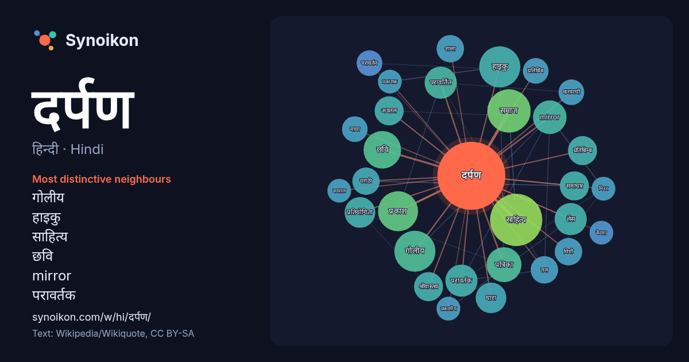

हिन्दी · Hindi · word of the day list
दर्पण
“mirror” · The words found around it in 693 instances from Hindi Wikipedia, Wikiquote.

Most distinctive neighbours
- गोलीय 19×
- हाइकु 19×
- साहित्य 14×
- छवि 14×
- mirror 13×
- परावर्तक 12×
- परावर्तित 12×
- लेंस 11×
- प्रकाश 11×
- समाज 10×
- पत्रिका 10×
- अवतल 9.9×
- प्रतिबिम्ब 9.8×
- श्रीवास्तव 9.7×
- शाला 8.8×
- मिमी 8.4×
- मराठी 7.9×
- धारामापी 7.9×
- धारा 7.9×
- परावर्तन 7.8×
× = how many times more often than in general Hindi Wikipedia text.
Most frequent neighbours
- साहित्य 29
- समाज 20
- गोलीय 18
- हाइकु 18
- प्रकाश 17
- उपयोग 16
- छवि 15
- पत्रिका 13
- mirror 12
- जिसमें 11
- परावर्तक 11
- परावर्तित 11
- प्रकार 11
- प्रयोग 11
- लेंस 11
- समय 11
- धारा 10
- नाम 10
- प्रतियोगिता 10
- मीटर 10
In context
- दर्पण एक वस्तु है जो एक छवि को दर्शाती है। प्रकाश जो एक दर्पण से उछलता है, आँख के लेन्स या कैमरे के माध्यम से केंद्रित होने पर उसके सामने जो कुछ भी है Wikipedia snippets · दर्पण
- गोलीय दर्पण (spherical mirror) वे दर्पण हैं जिनका परावर्तक तल गोलीय होता है। ये दो तरह के होते हैं - उत्तल दर्पण (convex mirror / कान्वेक्स मिरर) -- जिस Wikipedia snippets · गोलीय दर्पण
- विशेष कर ज्योतिष से संबधित यंत्रों के, निर्माण में दर्पणों ने अत्यंत महत्वपूर्ण सहायता प्रदान की है। दर्पण के तल से परावर्तित होते समय प्रकाश की किरणें दो Wikipedia snippets · समतल दर्पण
- मनोरंजन के उद्देश्य से दर्पण लॉन्च कर रहे हैं। यह पढ़ा गया है कि 1997-98 में मराठी में कुल 1561 अखबार थे । इसमें 225 दैनिक हैं। दर्पण अख़बार ने मराठी समाचार Wikipedia snippets · दर्पण (मराठी पत्र)
- फ़रवरी 2014 को पुरालेखित।. अभिगमन तिथि: 21 अक्तूबर 2014. हाइकु दर्पण, प्रकाशक- हाइकु दर्पण, बी-12 ए / 58 ए, धवलगिरि, सेक्टर-34, नोएडा-201301 "Simply Haiku: Wikipedia snippets · हाइकु दर्पण
- प्रतियोगिता दर्पण एक हिन्दी की प्रतियोगी पत्रिका है। "मेरी दुनिया मेरे सपने, शीर्षक: ऑनलाइन/ऑफलाइन हिन्दी मैग्ज़ीन का वृहद संग्रह।". 1 अगस्त 2013 को Wikipedia snippets · प्रतियोगिता दर्पण
- समान धारा बहेगी, किन्तु इस परिपथ को 'धारा दर्पण' नहीं कहा जाता। दूसरे शब्दों में कह सकते हैं कि धारा दर्पण वास्तव में धारा नियंत्रित धारा स्रोत (current-controlled Wikipedia snippets · धारा दर्पण
- दर्पण 1970 में बनी हिन्दी भाषा की फिल्म है। सुनील दत्त - बलराज दत्त वहीदा रहमान - माधवी सोनिया साहनी - बिजली रहमान रमेश देव - विनोद सुलोचना अचला सचदेव Wikipedia snippets · दर्पण (1970 फ़िल्म)
More Hindi words
- इतिहास
- ईश्वर
- कार्य
- कुत्ता
- गर्मी
- गाना
- घंटी
- घड़ी
- घोड़ा
- चाय
- चित्रकला
- छाया
- जंगल
- जलवायु
- जीवन
- तूफ़ान
- द्वीप
- नक्षत्र
- नमक
- परिवार
- पहाड़
- पानी
- पैसा
- प्रकृति
- बगीचा
- बिल्ली
- भाषा
- भोजन
- माता
- मानचित्र
- मृत्यु
- मौन
- रेगिस्तान
- रेलगाड़ी
- रोटी
- वर्षा
- विज्ञान
- शक्ति
- शरद
- शहद
- शहर
- सड़क
- सत्य
- समय
- सर्दी
- सेतु
- स्वर्ण
- स्वास्थ्य
- हृदय
Precomputed on 2026-10-09 with default settings (±5 words, medium corpus). The interactive map can refresh it with live data.